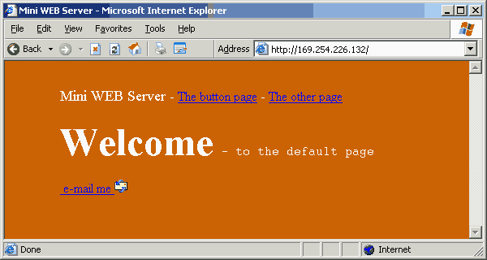
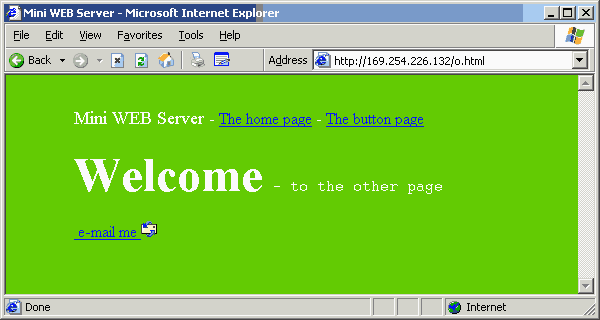
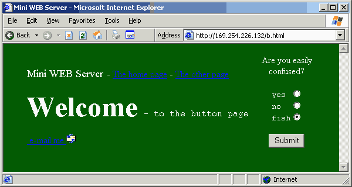
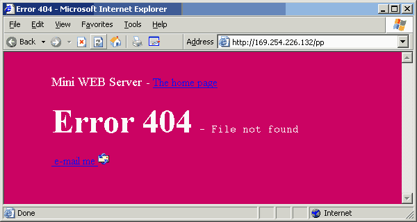

|
|
Embedded pages. by Lee Davison |
|
These are thethreefour pages as served by the EhBASIC network driver. While not much to look at they do provide proof that a microprocessor, even running BASIC, can be a web server.These images were created by using Internet Explorer to access the micro as you would any web site, then grabbing the window to the clipboard and then rendering that image as a 16 colour portable network graphic.
 This is the default page and is served if no file name is specified. This page, and its small e-mail graphic image, have been known to take as little as forty seconds to be served.
 This is the other page which was added so I had another page to access. Basically much the same as the default page but with the case sensetive filename o.html.
 The fourth page. On this page there is a form with four buttons. If 'Submit' is clicked the selection made is displayed, via the serial port, by the micro. This is just to show that an interactive page can easily be constructed.
 This is the third page that was added to the server. If no matching file is found for the HTTP GET request then the above page is served. This is not a true HTTP 404 response but was added to make sure that a garbage GET command didn't cause a crash.
There is one other named file, e.gif (lines 35000 onward). While it is made entirely of numeric DATA statements it is served much the same as the html pages.
| Last page update: 19th August, 2003. |
e-mail me
 |